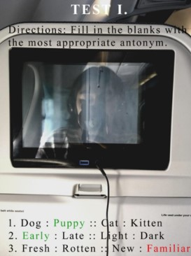
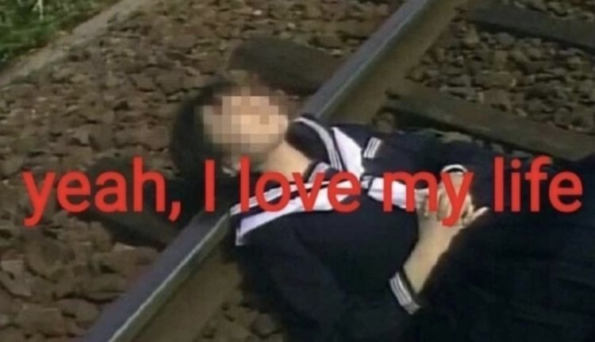
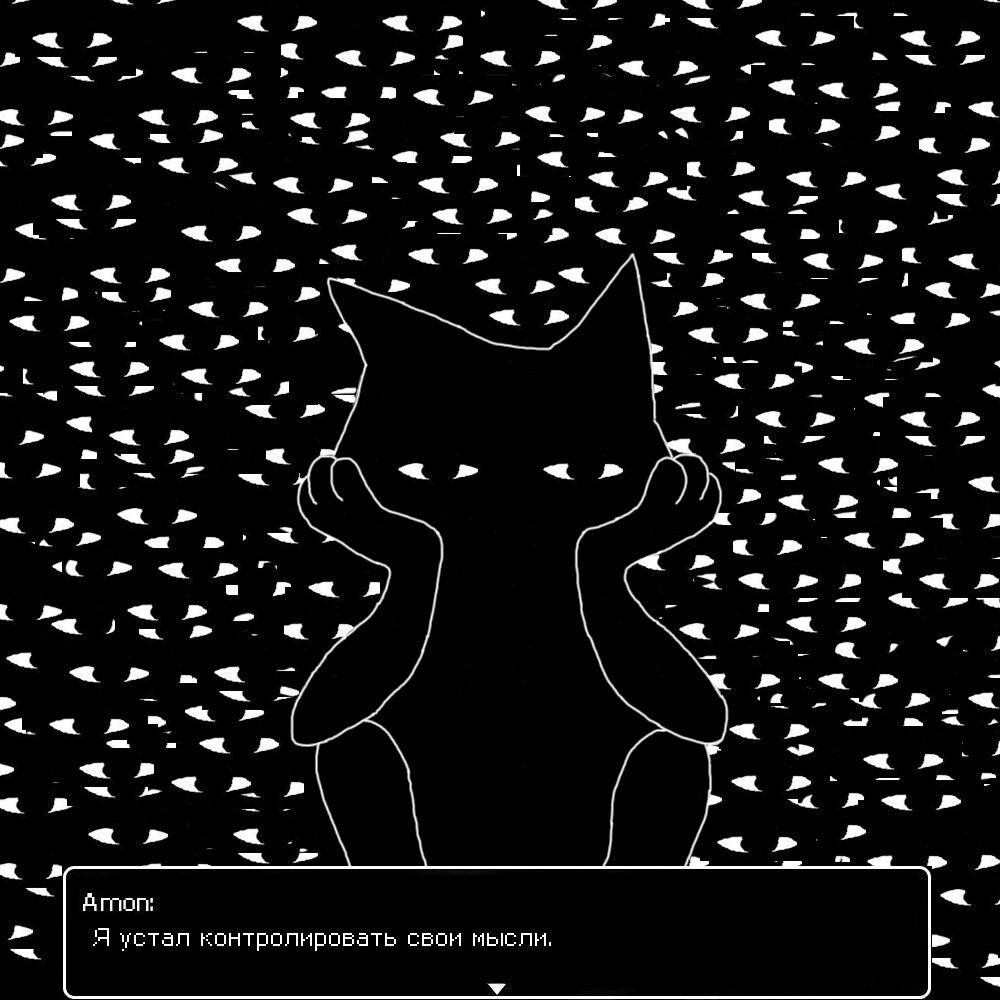
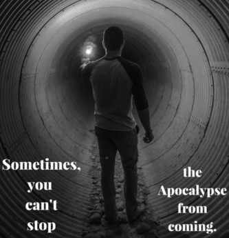

#06 (Moment)um
Irresistible force, meet immovable object...

Childhood, noun.
That feeling stillness.
...
Freezing
in a blue quilt of light --
an ambulance approaches

In physics class I learnt all about forces moving
forwards but what's the word to describe the way
your life slips out of control even in autopilot?
...
Am I running to somewhere,
Or away from something?
...
"it's not like that."
In space there's no gravity.
That means: no froce to pull you closer to me.
But it also means: no force that pushes me away.
...
It's hard to achieve terminal velocity
^
^
^
I've been falling for so long

I'm tired of controlling my thoughts.
...
The future is scary & that's why it's beautiful
like a mist, idk when I'm in it I can see it
floating 20 feet ahead so I'm in a future fog now,
okay...
is my destiny wise?
...
3:56 AM
woke up to the memory of dead gradfather.

Everything is so different
yet my hands are still hands
and not a wild fire.
...
I will either stop caring,
or this will all no longer matter.